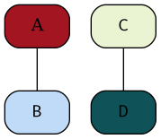

Data Sci Discover Project
Table of Contents
:SlowDown:
1 Links
2 Proposal
2.1 Question
Can we determine the second eigenvalue from the method parameters? For PageRank, the second eigenvalue is equal to the smoothing parameter α
Yes. An open question for the Power Walk method is, can we determine the second eigenvalue from the method parameters? For PageRank, the second eigenvalue is equal to the smoothing parameter α. The second eigenvalue determines how long the algorithm takes to converge and how stable the solution is. To begin, implement the method for computing PageRank and then the Power Walk. It can all be done using sparse matrices, so it only requires a fraction of the memory and is each iteration is quick.
2.2 Working
Take the exemplar Graph from Figure 1:
# #+begin_src javascript :exports code
@startdot
strict digraph graphName {
concentrate=true
fillcolor=green
color=blue
style="filled, rounded"
A [shape=box, fillcolor="#a31621", style="rounded, filled"]
edge [
arrowhead="none"
];
node[
fontname="Fira Code",
shape="square",
fixedsize=false,
style=rounded
];
# A -> B [dir="both"]
A -> B
B [shape=box, fillcolor="#bfdbf7", style="rounded, filled"]
B -> A
C [shape=box, fillcolor="#eaf4d3", style="rounded, filled"]
C -> D
D [shape=box, fillcolor="#0f5257", style="rounded, filled"]
D -> C
}
@enddot

\[\begin{aligned} \Gamma = I - n D^{- 1}_B \\ \end{aligned}\]
Where we have the following:
$$\begin{aligned}
β &= 10
B &= βA
A &=
\end{aligned}$$
\* References This section is necessary for references to work in HTML export, however it breaks LaTeX export because that relies on BibLaTex NOT BibTex which this is for.
Org-ref hasn’t been updated to allow a way to use HTML references with the syntax for biblatex.
Bibliography
#+endexample